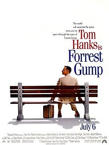

My favorite Movies !

|
1990 - The Hunt for Red OctoberThe story is set during the late Cold War era and involves a rogue Soviet naval captain who wishes to defect to the United States with his officers and the Soviet Navy's newest and most advanced nuclear missile submarine. |

|
1999 - MatrixIt depicts a dystopian future in which reality as perceived by most humans is actually a simulated reality called "the Matrix", created by sentient machines to subdue the human population, while their bodies' heat and electrical activity are used as an energy source. Cybercriminal and computer programmer Neo learns this truth and is drawn into a rebellion against the machines, which involves other people who have been freed from the "dream world". |
|  |
1994 - Forest GumpThe story depicts several decades in the life of Forrest Gump (Hanks), a slow-witted but kind-hearted man from Alabama who witnesses several defining historical events in the 20th century in the United States. |